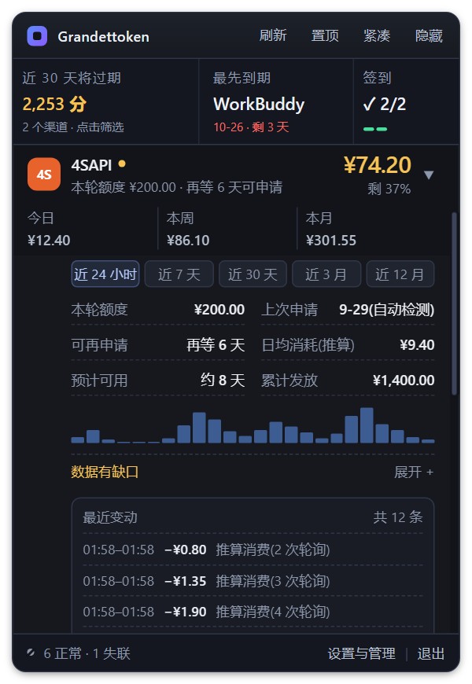
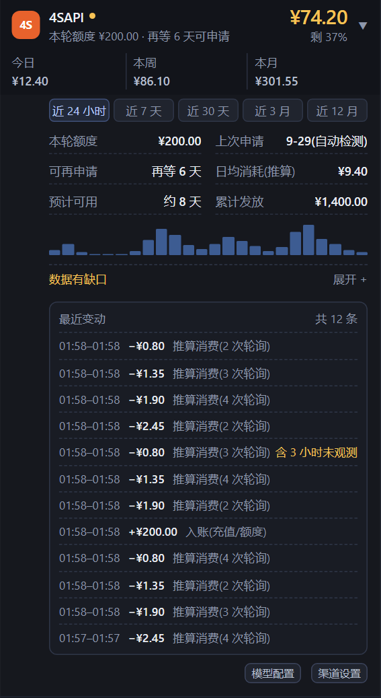
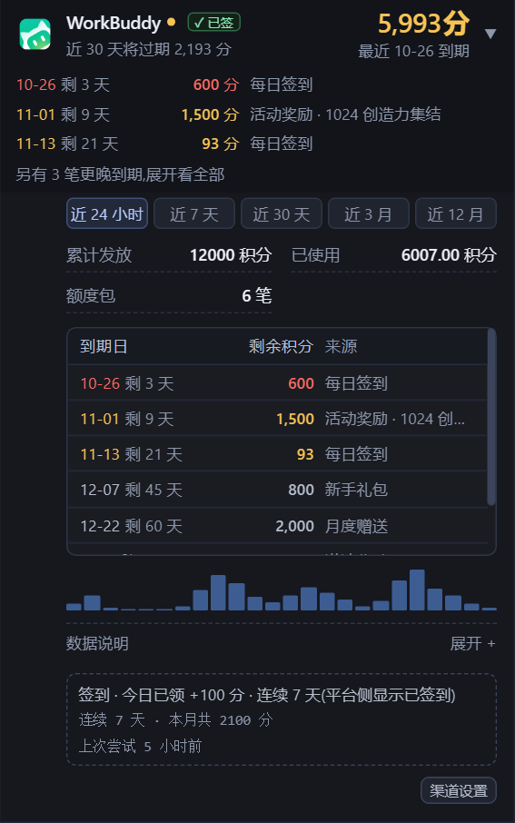
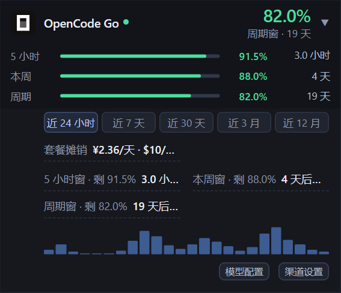
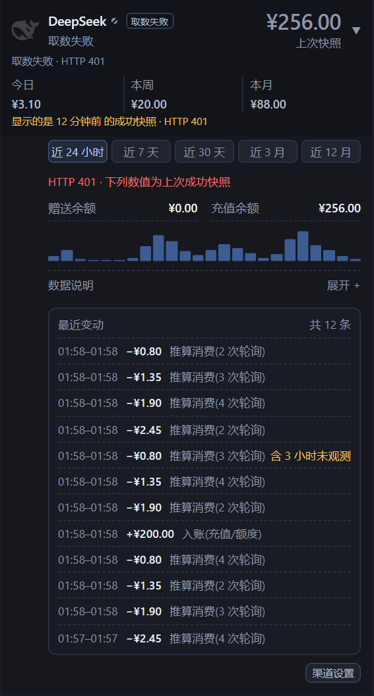

需求两件事:① 删掉渠道行点开后的日期区间筛选(近 24 小时 / 7 天 / 30 天 / 3 月 / 12 月)和迷你柱图; ② 把所有渠道的展开交互与展示形式调成一套。
只删这两样不够。它俩本身 53px(连外边距约 71px),而实测一张展开的金额型卡整行 691px, 是列表可视高(413px)的 1.7 倍 —— 点开任何一行,其余渠道全部被挤出屏外;删完它俩仍有约 620px。 占地的大头是 12 条「最近变动」(350px)和积分「逐笔到期」表(168px),再加上同一份列表在行头和详情里各画一次。
建议的方案:
get_series 命令。变动台账、今日/本周/本月、365 天日级归档都不动。Esc 先收起展开行。01:57–01:58 这两分钟里);折叠的失败行把「取数失败」说三遍。| 展开的卡 | 现在整行 | 剩余高度能放几行 | 新方案整行 | 剩余高度能放几行 |
|---|---|---|---|---|
| 4SAPI(金额 · 申请制 · 有台账) | 691 | 0 | 288 | 2 |
| OpenCode Go(配额 · 三个窗口) | 325 | 1 | 215 | 3 |
| WorkBuddy(积分 · 6 笔到期 · 签到) | 604 | 0 | 280 | 2 |
| DeepSeek(取数失败 · 旧快照 + 台账) | 702 | 0 | 251 | 3 |
「剩余高度能放几行」= ⌊(413 − 整行) ÷ 51⌋,51 是普通行的实测高度。现状列是 §1 的实测;新方案列是 §4.6 原型在同尺寸下的实测。实现后的真应用实测见 §11(300 / 226 / 272 / 267,同样在预算内)。
怎么量的:无头 Edge 加载真实的 app/src/index.html / app.js / styles.css,
Tauri 接口全部打桩,喂 7 个渠道的合成数据(字段形状照后端 ChannelView,数字是编的);
400 × 580 窗口、标准字号,逐个点开行头,等 1.2 秒后量高度、截图。不碰正在运行的应用,不落盘配置。
截图在 docs/assets/row-detail/。
| 测量项(px) | 4SAPI | OpenCode Go | WorkBuddy | DeepSeek(失败) |
|---|---|---|---|---|
| 折叠时整行 | 51 | 51 | 51 | 94 |
| 展开后行头(行头自己也变高了) | 94 | 120 | 141 | 137 |
| 其中「第三段」(只在展开时出现在行头里) | 36 | 62 | 83 | 36 |
| 区间按钮 + 迷你柱图(本次删除) | 23 + 30 | 23 + 30 | 23 + 30 | 23 + 30 |
| 明细 KV | 83 | 23 + 53 | 53 | 23 |
| 逐笔到期表 | — | — | 168 | — |
| 最近变动(12 条) | 350 | — | — | 350 |
| 数据说明 / 签到 / 错误提示 / 按钮 | 28 / — / — / 20 | — / — / — / 20 | 28 / 69 / — / 20 | 28 / — / 20 / 20 |
| 展开区合计 | 597 | 204 | 462 | 564 |
| 展开后整行(列表可视高 413) | 691 | 325 | 604 | 702 |
| 行滚到顶后,同屏还能完整看到几个别的渠道 | 0 | 1 | 0 | 0 |
各块之间的外边距没单列(每张卡 55–71px)。折叠行本身就有三种高度:51(多数)/ 39(Hapi,第二行是空的)/ 94(失败行多了两行提示)。





| # | 问题 | 证据 |
|---|---|---|
| P1 | 点开一行,其余渠道全部出屏。展开区没有任何高度约束,最长的两样(12 条变动、逐笔到期)默认全量画。 | §1 实测 691 / 604 / 702 > 413 |
| P2 | 靠下的行点开后不滚进视野,要自己往下翻才看得到展开了什么。 | 点击委托里没有滚动(app.js:2778-2817);只有「最先到期」跳转会滚(app.js:2641) |
| P3 | 区间按钮 + 柱图信息量低:24 根柱子没有坐标、没有数值、没有悬停;配额型画的是百分点、金额型画的是钱,同一个图两种单位。用户已裁决删除。 | app.js:793-810、855-864 |
| P4 | 同一份列表画两次:配额型的窗口在行头画一次(条 + 倒计时)、详情里又画一次(剩余% + 时间);积分型最近 3 笔在行头一次、到期表里又一次。 | 行头 app.js:557-600;详情 760-783、842-852 |
| P5 | 积分型行头写「另有 N 笔更晚到期,展开看全部」—— 这一段只在已展开时可见,这句话永远自相矛盾。 | app.js:573 + styles.css:1011 |
| P6 | 同一件事说三遍:失败行的「取数失败」(状态标签 / 副标题 / 第二行),「HTTP 401」(第二行 / 黄字 / 详情红字)。 | app.js:492、643-645、865-871;后端 view.rs:526-529 |
| P7 | 三种口径三种排法;行头与详情两条左边缘(12px / 49px)。缩进后的详情两列每列只剩约 150px,长值被省略。 | styles.css:228;OpenCode 截图 |
| P8 | 一次点击,行头和展开区分两段长高:第三段藏在行头里,展开时行头先变高,展开区再长。 | styles.css:1011 |
| P9 | 展开里又套一层 <details>「数据说明」:黄字「数据有缺口」要再点一下才知道缺在哪。 | app.js:832-839 |
| P10 | 动画先于数据:先加 .open(320ms 过渡),再 await 柱图和台账,内容在过渡跑完后才写进去。 | app.js:2790-2815(读代码推断;本机 IPC 太快,截图里看不出来) |
| P11 | 键盘:面板里按 Esc 直接收成胶囊,不先收展开行(10-21 设计稿 §6.6 要求逐层退);行头不在统一焦点环列表里。 | app.js:4288-4289;styles.css:481-484 |
| 删 | 位置 | 说明 |
|---|---|---|
| 区间按钮(近 24 小时 / 7 天 / 30 天 / 3 月 / 12 月) | app.js:855-864、点击分支 2762-2775;样式 .seg styles.css:235-238、焦点环里的 .seg button | 用户需求 |
| 迷你柱图 | app.js:793-810、展开时取曲线 2796-2802、sparkCache / sparkHours;样式 .spark* styles.css:245-250 | 用户需求 |
| 只为柱图存在的两句说明 | 「图中斜纹表示采样不完整」「90 天以前的趋势由日级摘要合成」app.js:819、823-825 | 图没了,说明跟着走 |
后端 get_series 命令 | src-tauri/src/lib.rs:904-957(含 SeriesView)、注册处 4796 | 前端不再调用,少一个 IPC 入口 |
| 探针里的桩 | build/probe-frontend.js:136 | 跟着删 |
| 留 | 理由 |
|---|---|
「最近变动」台账(channel_changes) | 金额型唯一的逐笔账目,回答"钱花哪了 / 什么时候到账的";只是默认改成 3 条 |
| 今日 / 本周 / 本月消耗、「预计可用 N 天」 | 由轮询算出,不依赖柱图那条序列 |
core 里的 trend_series 与 365 天日级归档 | README 承诺「90 天明细 + 365 天归档」;删数据不可逆,留着以后想加回趋势是零迁移(见 D3) |
Enter / Space:展开;再点收起。仍是单开(开一行自动收别的)。rowOpen 同一个机制)。Esc 逐层退:有展开行先收起它;没有才走原来的「面板 → 胶囊」。↑ ↓ 在行头之间移焦点照旧,行头加进统一焦点环。| 段 | 画什么 | 规则 |
|---|---|---|
| ① 核心 | 按口径三选一:金额 = 今日 / 本周 / 本月;配额 = 每个窗口一行;积分 = 最近到期的几笔 | 展开后第一眼看到的东西;原来行头里的第三段就是它 |
| ② 明细 | 两列 KV;键 + 值的显示宽度(中日韩字符按 2 计)超过 26 就独占一行,窄的排前面 | 只去确实重复的:本轮额度、可再申请、Codex 的套餐档位、有逐笔列表时的额度包笔数。不按条数截断(落地复核:截断会吞掉「统计范围」「未折进消耗」这类警示) |
| ③ 最近变动 | 只有金额型;默认 3 条 +「全部 N 条」 | 今天的写 HH:MM(聚合的写 HH:MM–HH:MM,跨零点也只写钟点),更早的只写结束时刻 MM-DD HH:MM;去掉外框,和别的段一样用小标题 |
| ④ 签到 | 只有开了签到的渠道;一行:连续天数 · 本月合计 · 上次尝试 | "今天签没签 / 能不能领"是行头徽标的事,这里只说徽标没说的 |
| ⑤ 页脚 | 上:一行小字说明(凭据来源 / 统计缺口 / 未公开接口),没有就不画;下:模型配置 · 渠道设置 | 替代原来那层 <details>「数据说明」;缺口写黄。新鲜是默认状态,不写「刚刚更新」 |
段与段之间只靠 8px 间距和小标题分隔,不再有实线框(台账)和虚线框(签到),五段的视觉重量一致。
| 口径 | ① 核心 | ② 明细(去重后全列) | ⑤ 页脚说明 |
|---|---|---|---|
| 金额 · 申请制(4SAPI) | 今日 / 本周 / 本月(推算的标「推算」) | 上次申请 · 日均消耗 · 预计可用 · 累计发放 | 今日统计起点晚于零点时写「今日从 HH:MM 起才有数据」(黄) |
| 金额 · 充值型(DeepSeek / Hapi) | 同上 | 赠送 / 充值余额;Hapi 的原始积分与换算 | 同上 |
| 配额(OpenCode Go / Codex) | 每窗一行:名称 · 迷你条 · 剩余% · 重置时间(< 24h 写相对,≥ 24h 写「N 天 · MM-DD HH:MM」);限流窗标红 | 套餐摊销(独占一行) | OpenCode Go:「未公开接口,响应结构一变就会取数失败」 |
| 积分(WorkBuddy / Trae / Qoder) | 最近 3 笔到期:日期 · 剩 N 天 · 分数 · 来源;7 天内红、30 天内黄;超过 3 笔出「全部 N 笔」 | 累计发放 · 已使用 | 凭据来源(读本机桌面端,只读) |
| 取数失败(任一口径) | 照常画五段,数值用上次成功快照、降到 72% 透明度(与陈旧行同一套) | 原因已在折叠行副标题里就不再写;原文太长被省略号截断时,才在这里写全(红字) | |
| 未配置 / 未登录 | 不画五段:沿用现在的一句引导 +「渠道设置」(app.js:695-719) | ||
积分渠道接口不给逐笔到期时(Qoder),核心段沿用现有兜底文案「接口未提供完整的逐笔到期信息…」,明细里不再重复列一条「逐笔到期明细:接口未提供」。
标准字号下,默认展开(没点「全部 N 条」)的整行 ≤ 300px。列表可视高 413 − 300 = 113,正好再放下两条 51px 的普通行。
大字号 / 特大字号下窗口按同一个倍率放大(formSize,app.js:2211-2217),验收放宽为「同屏至少还有 1 个别的渠道」。
用户点了「全部 N 条」不受预算约束 —— 那是他主动要看的。
预算主要靠两刀:最近变动 12 条 → 3 条(350 → 约 86px);行头不再在展开时长高(第三段 36–83px 挪进核心段,和原来的详情合并成一份)。
--bg2),左侧一条 2px 强调色竖线。竖线用品牌蓝不用状态色 —— 红黄绿已经被状态点和大数字占了;卡比一屏高时,滚到中间也认得出是哪张开着。--tx3(与分组标题同级);正文 11.5px;页脚说明 10.5px。--tx2,悬停变强调色),不做描边按钮,不和页脚的「渠道设置」抢眼。.rbody 的 grid-template-rows 0fr → 1fr。行头不再变高之后,整次展开只剩这一个动画。展开区去重之后,折叠行里的重复会成为最显眼的不一致。下面四条不动两级行结构(「需要处理 / 其余」分组、紧急行放大都保留), 也不影响紧凑条 / 胶囊 / 吸附 —— 它们只用状态标签和大数字。
| 情形 | 现在 | 改成 |
|---|---|---|
| 取数失败 / 需登录 | 标签「取数失败」+ 副标题「取数失败」+ 第二行「取数失败 · HTTP 401」+ 黄字「显示的是 12 分钟前的成功快照 · HTTP 401」+ 右侧「上次快照」;94px | 标签「取数失败」(紧凑条与非颜色模式靠它)· 副标题只写原因「HTTP 401」· 右侧「12 分钟前快照」;不画第二行与黄字 |
| 陈旧(取数成功但过期) | 黄字「显示的是 X 的成功快照」与紧急行第二行「X 前的快照」可能同时出现 | 只在右侧写一次「X 前快照」,数字照旧降透明度 |
| 金额型第二行两边都空(Hapi) | 39px,比别的行矮一截 | 左侧兜底写「今日 ¥1.20(推算)」,与其余行同高 |
| 配额型重置时间未知 | 「周期窗 · —」,破折号悬空 | 「周期窗」 |
fmtClock(ts)(app.js:97-100)按毫秒解释入参(new Date(ts)),而三处调用传的都是秒:
台账的 startTs / endTs(app.js:887-888,来自 store.rs:49-58 的 ChangeEntry)和 gapDayFrom(app.js:820)。
后端时间戳统一是 now_ts() = Local::now().timestamp()(fetch.rs:594-596)。
实测同一个当前时刻:当秒传进去得 01:58,换成毫秒得 14:24。7 天的跨度被压成约 10 分钟(604800 秒当毫秒 ≈ 605 秒),
所以 §1 截图里 12 条全挤在 01:57–01:58;「今日从 HH:MM 开始统计」同样是错的。
修法:fmtClock 改吃秒,与 fmtDay(app.js:224-228)同口径。
副标题只要在 extra 里找到「套餐」就写「ChatGPT 订阅 · 套餐值」(app.js:493-496,本意只给 Codex);
而 OpenCode Go 在汇率还没取到时,后端正好往 extra 塞一条「套餐:$10/期 · 未折进消耗(汇率还没取到)」(fetch.rs:357-361),
副标题就成了「ChatGPT 订阅 · $10/期 · 未折进消耗…」。读代码确认,未在真机复现(要等汇率恰好取不到)。修法:这条副标题只认 Codex。
README 写 OpenCode Go「渠道定义里标了 unstable,界面上可与稳定渠道区分」,app.js:480-481 的注释也说「未公开接口……明细里都有」——
但 app.js 里没有任何一处读 unstable。新方案把这句放进 OpenCode Go 展开区的页脚说明(§4.3)。
| # | 问题 | 建议 | 理由 |
|---|---|---|---|
| D1 | 原地展开统一卡片,还是改成点进整页「渠道详情」(像「设置与管理」那样盖住列表)? | 原地展开 | 不改"点一下看细节"的习惯,不多一步返回;改动只在渲染层。整页详情留作以后渠道信息再变多时的备选 |
| D2 | 长列表默认显示几条? | 3 条 +「全部 N 条」 | 3 条正好把金额卡压进 300px;5 条多约 44px,同屏只剩 1 个别的渠道 |
| D3 | 后端只删 get_series,还是连 trend_series 与日级归档一起删? | 只删命令 | README 承诺 365 天归档;删数据不可逆,留着以后加回趋势是零迁移。代价:归档暂时只写不读 |
| D4 | §5 的折叠行对齐要不要一起做? | 一起做 | 展开区去重后,失败行的三遍重复会成为最刺眼的不一致;四条都只是文案与显隐 |
| D5 | 「数据说明」还要不要折叠? | 不折叠,常显在页脚 | 柱图没了以后只剩一两句;缺口与失败该被直接看见 |
| D6 | 展开行加不加左侧强调竖线? | 加,用品牌蓝 | 卡比一屏高、行头滚出视野时仍认得出是哪张开着;状态色已被占用 |
| 文件 | 改动 |
|---|---|
app/src/app.js | renderDetail 重写为五段骨架;renderRow 去掉行头第三段与 §5 的重复提示;点击委托改「先画后取」+ 展开后滚进视野;
「全部 N 条」的开合状态(随 rowOpen 一起保留);Esc 先收展开行;fmtClock 改吃秒;Codex 专属副标题;OpenCode Go 的未公开接口说明;
删 sparkCache / sparkHours / range 分支 / get_series 调用;render() 里为到期表保存 / 恢复滚动位置的那部分(app.js:981-1003)随 .extab 一起删,列表自己的 scrollTop 保留 |
app/src/styles.css | 删 .seg / .spark* / .extab / 台账外框 / .ckdet 虚线框 / .row:not(.open) .seg3;
加展开卡底色与竖线、段标题与间距、「全部 N 条」;.rhead 进统一焦点环;紧凑条里隐藏 .use / .wins / .exps 的规则失去对象,一起删 |
app/src-tauri/src/lib.rs | 删 get_series 与 SeriesView,命令注册表去掉一项 |
build/jsdom-smoke.js | 「第三段包进 seg3」那条断言(jsdom-smoke.js:145)改成新结构;补三条:没有 .seg / .spark、台账默认 3 条、台账时间按本地时钟 |
build/probe-frontend.js | 删 get_series 桩 |
build/(新增) | 把 §1 的取证脚本正式化成回归脚本:点开每类渠道量整行高度,对照 §4.4 预算 |
DESIGN.md | §3 信息架构图「展开:区间 / 明细 / 迷你柱图」、§6.2 区间按钮那一行、§8 功能清单 #7 / #26 改成新口径 |
core crate 不改(D3)。
get_series。build/visual-forms.js 的截图与改动前一致(展开区只在面板形态出现)。| 不做 | 为什么 |
|---|---|
| 换一种趋势图 | 用户裁决是删,不是替换;首页的任务是"现在"(10-21 设计稿 §9 同一条) |
| 动两级行结构、分组与排序 | v0.1.56 刚落地,本次只对齐文案(§5) |
| 多行同时展开 | DESIGN.md §10 的 B11 仍挂着;多开会让 300px 预算失去意义 |
| 右键菜单 / 行内直接改设置 | 10-21 设计稿 Q4 定为 P2;展示区不放设置项(DESIGN.md §3 的约束) |
| 改后端取数或视图口径 | 本次只动渲染层 |
D1–D6 全部按建议落地。用与 §1 同一套无头 Edge 脚本(真实 index.html / app.js / styles.css +
打桩 Tauri + 同一份合成数据),400 × 580、标准字号复测:
| 项 | 设计预算 / 预期 | 实现后实测 |
|---|---|---|
| 4SAPI 展开整行 | ≤ 300 | 300 |
| OpenCode Go 展开整行 | ≤ 300 | 226 |
| WorkBuddy 展开整行 | ≤ 300 | 272 |
| DeepSeek(失败)展开整行 | ≤ 300 | 267 |
| 行头展开前后高度差 | 0 | 0(50/50、58/58) |
| 折叠行高度 | 普通行一致 | 51 / 51 / 51 / 51 / 51 / 50;失败行 59 |
data-act="range"、.spark:0 处;运行期间 get_series 调用 0 次。Esc → 展开行 0,形态仍是 form-panel(不再一步收成胶囊)。14:52–15:12(修前是 12 条 01:5x)。build/jsdom-smoke.js 40/40 通过(新增:五段骨架 / 无柱图 / 台账 3 条 / 本地时间 / 失败行去重 / Codex 专属副标题);
cargo check --all-targets exit 0;build/check-css-forms.js PASS。与 §4.6 原型数字的差异(300 vs 288、226 vs 215 等)来自真实组件的行高与文字宽度,均在 300px 预算内。 真机(非打桩)的像素与滚动体验仍需按 README 的发布流程复测一次。
三档字号 × 四张卡、跨天台账、含已过期包的积分、限流窗口、需登录 / 陈旧 / 未配置、键盘(Tab / Enter / Esc)、
临期筛选 + Esc、取数期间轮询、重复展开、紧凑条点 chip。改前 9 / 29 通过,修完 30 / 30(多了一条反向用例)。
修掉的 11 处见 PROGRESS.md 同名一节;对设计的两处修订已写回上面的 §4.2 表:
明细不再截成 4 项(只去重),更早的台账只写结束时刻。